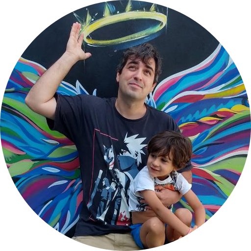

Lucas Deboni

Summary
Living and learning daily on this journey called life. Some things I'm learning is to be humble, work and enjoy the journey.
Education
Work Experience
- System Analyst | Jun 2021 - Present
FIT - Flextronics Institute of Technology
- Requirements gathering
- Documentation
- Card creation for developers
- Manual creation
- System improvement analysis
- Engineering Technician | Jan 2014 - Jun 2021
Flex
- Failure analysis on the production line in the test machines or in the production process
- Preventive maintenance
- Creation of assembly manuals
Skills
- Team work
- Task that needs attention
- Humility to learn
- Honesty and courage to say I don't know when I don't know
Certifications and Awards
- Lean Green Belt
- Marry a nice wife
- 3 children
- Having the same birthday as my wife
About me